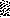

Todays class.
A good estimator,  of a population parameter
has at least two properties:
of a population parameter
has at least two properties:
Technically the first of these conditions is termed unbiased, and an unbiased estimator that is most concentrated about the true value is called efficient.
So a good estimator is unbiased and efficient.
Further, it is highly desirable to be able to estimate accurately the variability/s.e. of an estimator.
It is a fact that under the classical regression assumptions, the least
squares estimate of  is both unbiased and efficient. Further, the
estimate of the standard error is accurate - we quantify the uncertainty
accurately.
is both unbiased and efficient. Further, the
estimate of the standard error is accurate - we quantify the uncertainty
accurately.
Recall the the ordinary least squares (OLS)
estimates are defined as the values of
and  that minimize
that minimize
Heteroscedasticity
Under conditions of heteroscedasticity things change:
To be precise, the OLS estimate of  is still unbiased but it is
not efficient. That is, there is another estimator out there that is
more concentrated about the true value than the OLS estimate. In addition, the
estimate of standard error that comes from OLS is just plain wrong,
it misrepresents the standard error. The bottom line is that
estimation is OK but could be better and inference (CI's and p-values) is
broken.
is still unbiased but it is
not efficient. That is, there is another estimator out there that is
more concentrated about the true value than the OLS estimate. In addition, the
estimate of standard error that comes from OLS is just plain wrong,
it misrepresents the standard error. The bottom line is that
estimation is OK but could be better and inference (CI's and p-values) is
broken.
Options:
1. A very straightforward option is to still use the OLS estimate, recognize that it is not efficient, but at least get the standard error right. One way to get the standard error right is to use bootstrap estimates of standard error.
2. If you want to deal with the efficiency issue you need to leave the OLS paradigm. The way to get efficient estimates in the presence of heteroscedasticity is to do Weighted Least Squares (WLS).
WLS estimates are defined as the values of
and  that minimize
that minimize
where are the weights.
The question is of course, just what should the weights be? Intuitively you should give higher weight in the regression to observations that are more ``informative'', and down weight the less informative observations. It turns out that information is just the inverse of variability, so that if we denote the variance of  as , then . That is we weight inversely proportional to the variance.
Next question; how do we get at ? Options here are
In summary, in the presence of heteroscedasticity we have
To illustrate the points I have run some simulations from a fake dataset,
one in which I generate the data, so know the ``truth''. This is the
most common way (Monte Carlo simulation) around to understand long run
properties of estimates and procedures.
The idea is to create data and run a regression. Coefficients and
standard errors are saved for this regression. Then another new data set
is created and the new coefficients etc are saved.
This is replicated many times (2000 for this example)
and the long run/average properties of the estimates are investigated.
It
may even be the case that some of the coefficients themselves are obtained by
a simulation, in this case the bootstrap standard error estimates, so that
there are two levels of simulation. If each bootstrap estimate takes 1000
resamples from a single dataset, and there are 2000 replicates in the
entire simulation then we end up doing 2,000,000 regressions!
The Fake.
Comments: